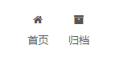

前言
第一篇博客大概介绍了如何在本地以及github上部署自己的hexo博客，但是人总是喜欢折腾，博客搭建完了就要考虑装修美观。我自己也稍微折腾了下，把一些踩过的坑在这里记录下
主题
原来的主题说实话真的不太好看，主题不需要太折腾，能看就好，Hexo官网上有不少的主题，有兴趣的可以自己看demo，我用的是比较主流的Next主题，个人认为比官网上大多数看到的都要好看。
主题的安装相对来说较为简单，只要把整个主题pull到本地的/themes目录下即可，然后修改一下/_config.yml，搜索themes:即可1
2
3
4# Extensions
## Plugins: https://hexo.io/plugins/
## Themes: https://hexo.io/themes/
theme: next # 这里改成文件夹的名字
菜单
刚建立完博客，我的标签页只有两个，首页和归档。

后来发现在/themes/next/_config.yml中可以配置，将预设的注释取消即可显示标签分类等菜单类别
1 | # Usage: `Key: /link/ || icon` |
分类和标签
在主文件夹下输入，在/source目录下会多两个categories和tags目录，我对前端知识基本不了解，盲猜hexo是通过source获取显示的数据，根据配置的参数生成了最终的html网页，因此这相当于新建了两个html页面1
2hexo new page categories
hexo new page tags
在/source/tags/index.md中加一行，变为1
2
3
4
5---
title: tags
date: 2019-08-10 16:29:03
type: "tags" # 加这一行
---
对另一个/source/categories/index.md同样添加一行type: "categories"
感觉上指定了这个页面显示的数据，如果交换的话，点击分类反而会显示标签的数据了
主页不显示全文
有时我们不希望文章在主页全部显示，通常建议对每一篇文章单独配置，在文中某个位置插入1
<!-- more -->
在主页就只会显示这一行之前的部分了
插入图片
首先设置/_config.yml中的post_asset_folder: true，在创建新的post的时候会在/source目录下产生同名的文件夹，post引用的资源能够放在其中
在post中引用的时候，使用如下markdown语法即可1
2
3
4
5
6
7# _post
# ├── hello-hexo
# | ├── pic_1.jpg
# | └── pic_2.png
# └── hello-hexo.md